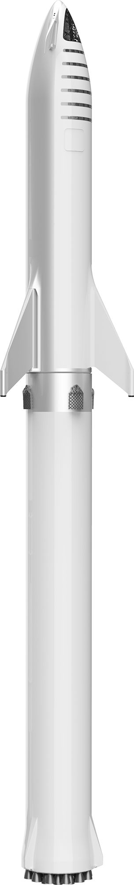
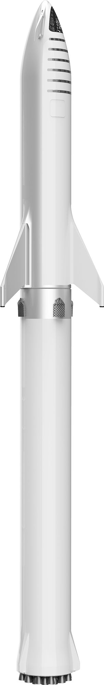

FANPAGE
SpaceX's Rockets
Current 2020 & Future
THE FALCON 9
About The Rocket
Falcon 9 is a two-stage rocket designed and manufactured by SpaceX for the reliable and safe transport of satellites and the Dragon spacecraft into orbit. Falcon 9 is the first orbital class rocket capable of reflight. SpaceX believes rocket reusability is the key breakthrough needed to reduce the cost of access to space and enable people to live on other planets.
Falcon 9 was designed from the ground up for maximum reliability. Falcon 9’s simple two-stage configuration minimizes the number of separation events -- and with nine first-stage engines, it can safely complete its mission even in the event of an engine shutdown.
Falcon 9 made history in 2012 when it delivered Dragon into the correct orbit for rendezvous with the International Space Station, making SpaceX the first commercial company ever to visit the station. Since then Falcon 9 has made numerous trips to space, delivering satellites to orbit as well as delivering and returning cargo from the space station for NASA. Falcon 9, along with the Dragon spacecraft, was designed from the outset to deliver humans into space and under an agreement with NASA, SpaceX is actively working toward this goal.
Falcon 9 was designed from the ground up for maximum reliability. Falcon 9’s simple two-stage configuration minimizes the number of separation events -- and with nine first-stage engines, it can safely complete its mission even in the event of an engine shutdown.
Falcon 9 made history in 2012 when it delivered Dragon into the correct orbit for rendezvous with the International Space Station, making SpaceX the first commercial company ever to visit the station. Since then Falcon 9 has made numerous trips to space, delivering satellites to orbit as well as delivering and returning cargo from the space station for NASA. Falcon 9, along with the Dragon spacecraft, was designed from the outset to deliver humans into space and under an agreement with NASA, SpaceX is actively working toward this goal.
Payload
Falcon 9 delivers payloads to space aboard the Dragon spacecraft or inside a composite fairing.
Dragon Spacecraft
Dragon carries cargo in the spacecraft’s pressurized capsule and unpressurized trunk, which can also accommodate secondary payloads. In the future, Dragon will carry astronauts in the pressurized capsule as well.
COMPOSITE FAIRING
The payload fairing is for the delivery of satellites to destinations in low Earth orbit (LEO), geosynchronous transfer orbit (GTO) and beyond.
NINE MERLIN ENGINES
With its nine first-stage Merlin engines clustered together, Falcon 9 can sustain up to two engine shutdowns during flight and still successfully complete its mission. Falcon 9 is the only launch vehicle in its class with this key reliability feature.
Watch The Falcon 9 Take Off and Land!
Rocket Stages
INTERSTAGE
The interstage is a composite structure that connects the first and second stages and holds the release and separation system. Falcon 9 uses an all-pneumatic stage separation system for low-shock, highly reliable separation that can be tested on the ground, unlike pyrotechnic systems used on most launch vehicles.
FIRST STAGE
Falcon 9’s first stage incorporates nine Merlin engines and aluminum-lithium alloy tanks containing liquid oxygen and rocket-grade kerosene (RP-1) propellant. After ignition, a hold-before-release system ensures that all engines are verified for full-thrust performance before the rocket is released for flight. Then, with thrust greater than five 747s at full power, the Merlin engines launch the rocket to space. Unlike airplanes, a rocket's thrust actually increases with altitude; Falcon 9 generates more than 1.7 million pounds of thrust at sea level but gets up to over 1.8 million pounds of thrust in the vacuum of space. The first stage engines are gradually throttled near the end of first-stage flight to limit launch vehicle acceleration as the rocket’s mass decreases with the burning of fuel.
ENGINES
BURN TIME
9
162
SEC
THRUST AT SEA LEVEL
7,607 kN
1,710,000 lbf
THRUST IN VACUUM
8,227kN
1,849,500 lbf
SECOND STAGE
The second stage, powered by a single Merlin vacuum engine, delivers Falcon 9’s payload to the desired orbit. The second stage engine ignites a few seconds after stage separation, and can be restarted multiple times to place multiple payloads into different orbits. For maximum reliability, the second stage has redundant igniter systems. Like the first stage, the second stage is made from a high-strength aluminum-lithium alloy.
ENGINES
BURN TIME
1
397
SEC
THRUST
934 kN
210,000 lbf
TECHNICAL OVERVIEW
HEIGHT
70 m
229.6 ft
DIAMETER
3.7 m
12 ft
MASS
549,054 kg
1,207,920 lb
STAGES
2
PAYLOAD TO LEO
22,800 kg
50,265 lb
PAYLOAD TO GTO
8,300 KG
18,300 lb
PAYLOAD TO MARS
4,020 kg
8,860lb
THE FALCON HEAVY
About The Rocket
Falcon Heavy is the most powerful operational rocket in the world by a factor of two. With the ability to lift into orbit nearly 64 metric tons (141,000 lb)---a mass greater than a 737 jetliner loaded with passengers, crew, luggage and fuel--Falcon Heavy can lift more than twice the payload of the next closest operational vehicle, the Delta IV Heavy, at one-third the cost. Falcon Heavy draws upon the proven heritage and reliability of Falcon 9.
Its first stage is composed of three Falcon 9 nine-engine cores whose 27 Merlin engines together generate more than 5 million pounds of thrust at liftoff, equal to approximately eighteen 747 aircraft. Only the Saturn V moon rocket, last flown in 1973, delivered more payload to orbit. Falcon Heavy was designed from the outset to carry humans into space and restores the possibility of flying missions with crew to the Moon or Mars.
Its first stage is composed of three Falcon 9 nine-engine cores whose 27 Merlin engines together generate more than 5 million pounds of thrust at liftoff, equal to approximately eighteen 747 aircraft. Only the Saturn V moon rocket, last flown in 1973, delivered more payload to orbit. Falcon Heavy was designed from the outset to carry humans into space and restores the possibility of flying missions with crew to the Moon or Mars.
Payload
Falcon Heavy missions will deliver large payloads to orbit inside a composite fairing, but the rocket can also carry the Dragon spacecraft.
COMPOSITE FAIRING
The composite payload fairing protects satellites during delivery to destinations in low Earth orbit (LEO), geosynchronous transfer orbit (GTO) and beyond.
BOOSTERS
Each of Falcon Heavy’s side cores, or boosters, is equivalent to the first stage of a Falcon 9 rocket with nine Merlin engines. At liftoff, the boosters and the center core all operate at full thrust. Shortly after liftoff, the center core engines are throttled down. After the side cores separate, the center core engines throttle back up.
THREE NINE-ENGINE CORES
Inside each of Falcon Heavy’s three cores is a cluster of nine Merlin engines. These same engines power Falcon 9, enabling efficiencies that make Falcon Heavy the most cost-effective heavy-lift launch vehicle in the world. With a total of 27 first-stage engines, Falcon Heavy has engine-out capability that no other launch vehicle can match—under most payload scenarios, it can sustain more than one unplanned engine shutdown at any point in flight and still successfully complete its mission.
Watch the Falcon Heavy Take Flight!
Rocket Stages
FIRST STAGE
Three cores make up the first stage of Falcon Heavy. The side cores, or boosters, are connected at the base and at the top of the center core’s liquid oxygen tank. The three cores, with a total of 27 Merlin engines, generate 22,819 kilonewtons (5.13 million pounds) of thrust at liftoff. Shortly after liftoff the center core engines are throttled down. After the side cores separate, the center core engines throttle back up to full thrust.
CORES
ENGINES
3
27
THRUST AT SEA LEVEL
22,819kN
5,130,000 lbf
THRUST IN VACUUM
24,681 kN
5,548,500 lbf
SECOND STAGE
Falcon Heavy draws upon Falcon 9’s proven design, which minimizes stage separation events and maximizes reliability. The second-stage Merlin engine, identical to its counterpart on Falcon 9, delivers the rocket’s payload to orbit after the main engines cut off and the first-stage cores separate. The engine can be restarted multiple times to place payloads into a variety of orbits including low Earth, geosynchronous transfer orbit (GTO) and geosynchronous orbit (GSO).
ENGINES
BURN TIME
1
397
SEC
THRUST IN VACUUM
934 kN
210,000 lbf
TECHNICAL OVERVIEW
HEIGHT
70 m
229.6 ft
DIAMETER
12.2 M
39.9 ft
MASS
1,420,788 kg
3,125,735 lb
STAGES
2
BOOSTERS
2
PAYLOAD TO LEO
63,800 kg
140,660 lb
PAYLOAD TO GTO
26,700 kg
58,860 lb
PAYLOAD TO MARS
16,800 kg
37,040 lb
PAYLOAD TO PLUTO
3,500 KG
7,720 lb
STARSHIP
About The Rocket
SpaceX's Starship spacecraft and Super Heavy rocket (collectively referred to as Starship) represent a fully reusable transportation system designed to carry both crew and cargo to Earth orbit, the Moon, Mars and beyond. Starship will be the world's most powerful launch vehicle ever developed, with the ability to carry in excess of 100 metric tonnes to Earth orbit. Drawing on an extensive history of launch vehicle and engine development programs, SpaceX has been rapidly iterating on the design of Starship with orbital-flight targeted for 2020.
STARSHIP USES
The Starship payload fairing is 9 m in diameter and ~19 m high, resulting in the largest usable payload volume of any current or in development launcher. This payload volume can be configured for both crew and cargo.
STARSHIP
Starship is the fully reusable second stage and has an integrated payload section. Starship serves as a large, long-duration spacecraft capable of carrying passengers or cargo to Earth orbit, planetary destinations, and between destinations on Earth.
DIAMETER
9 m / 30 ft
PROPELLANT CAPACITY
1200 t / 2.4 Mlb
HEIGHT
50 m / 160ft
PAYLOAD CAPACITY
100+ t / 220+ klb
SUPER HEAVY
The first stage, or booster, of our next-generation launch vehicle has a gross liftoff mass of over 3 million kg and uses sub-cooled liquid methane and liquid oxygen (CH4/LOX) propellants. The booster will return to land at the launch site on its 6 legs.
DIAMETER
9 m / 30 ft
PROPELLANT CAPACITY
3300 t / 6.6 Mlb
HEIGHT
68m / 223ft
THRUST
72 MN / 16 Mlbf
RAPTOR ENGINE
Raptor is a full-flow, staged combustion rocket engine powered by cryogenic methane and liquid oxygen (LOX), rather than the RP-1 kerosene and LOX used in SpaceX’s prior Merlin engine family. The Super Heavy booster is powered by 37 Raptors, while Starship is powered by 6.
DIAMETER
1.3 m / 4 ft
THRUST
2 MN / 440 Klbf
HEIGHT
3.1 m / 10.2 ft